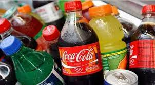
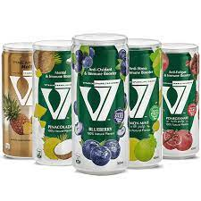
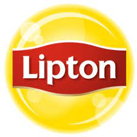
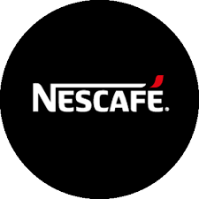

Alternative Drinks for Boycotting Coca-Cola,Lipton & Nescafé
The UK-based NGO Friends of Al-Aqsa recently launched a #BoycottCocaCola campaign that encouraged restaurants to ditch the company “Coca-Cola for operating… in Atarot, an illegal Israeli settlement located in the occupied West Bank”.
Since then, an increasing number of restaurants have chosen to boycott not just Coca-Cola, but also Pepsi for their continued support of Israel’s illegal occupation of Palestine and its invasion of Gaza
Here is a list of Three beverage companies, some of which provide alternative Drinks, for those restaurants and takeaways looking to join this boycott.
Double Dare

Double Dare drinks are considered one of the most important products of the Egyptian Mix Tender Company.
V7
V7 is a alternative drink . This drink is prepared using high-quality sugar, natural flavors and carbonated water to stay healthy
Abu Auf

The origin of Abu Auf Company is that it is an Egyptian company of origin and activity
Lipton
Lipton tea is on the list of British-made products. Britain previously announced its support for the Israeli occupation forces, so Lipton is one of the products that must be boycotted in the Arab world.
Nescafé
Many supporters of the campaign to boycott products that support the Israeli occupation entity circulated the name of Nescafe as one of the products that should be boycotted because it is owned by the transcontinental company Nestlé